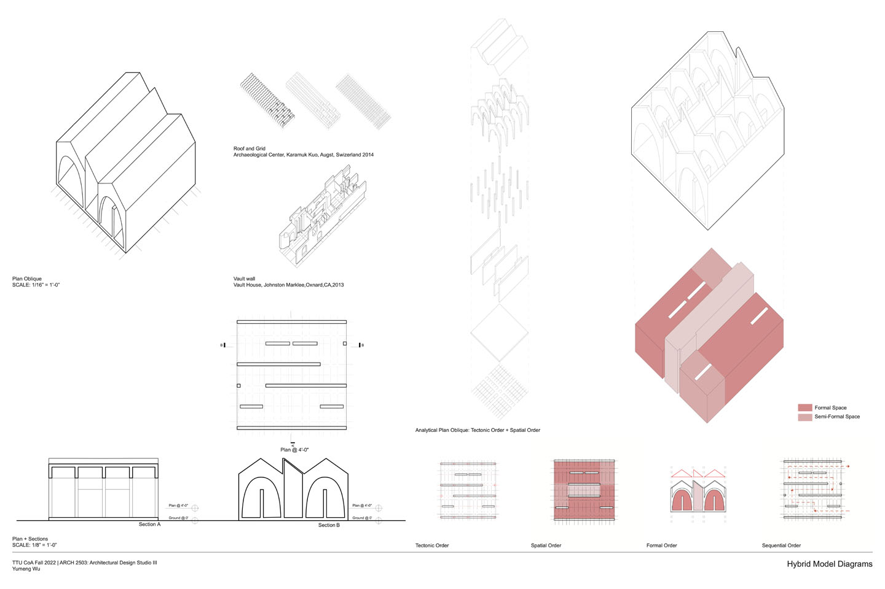

Type: Art School in downtown Lubbock, TX.
The Fall 2022 studio’s study project entails the creation of an art school situated in downtown Lubbock, TX, strategically linked to the vibrant local art district, thus fostering a strong bond between students and the community. This endeavor unfolds in three distinct phases.
Initially, we were tasked with investigating the structural aspects of two precedent buildings. Subsequently, through collaborative efforts, we selected key architectural elements from these precedents and transformed them into detailed study models. Finally, these models were seamlessly integrated to shape the envisioned art school.
Site Mapping and User Analysis
Hybrid Model Diagrams

Floor Plan
Section A

Section B
Art School Vision
Plan Oblique